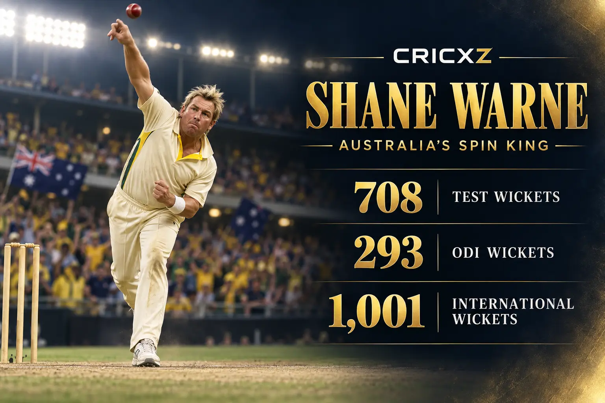
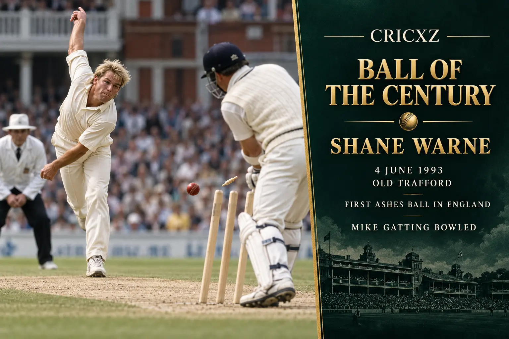

Test Bowling
- Matches
- 145
- Wickets
- 708
- Bowling average
- 25.41
- Best bowling
- 8/71
- Five-wicket hauls
- 37
- Ten-wicket matches
- 10
- Catches
- 125

Shane Warne took 708 Test wickets and 293 ODI wickets, becoming the first bowler to reach 700 Test wickets and finishing with 1,001 international wickets.
Career statistics are final.
Warne played his final Test in January 2007. The figures above were checked against ICC and established statistical records.
Warne transformed modern leg-spin with sharp turn, control and tactical imagination. Across 145 Tests and 194 ODIs, he became Australia's leading Test wicket-taker and one of the defining cricketers of his era.

On 4 June 1993 at Old Trafford, Warne's first Ashes delivery in England pitched outside Mike Gatting's leg stump, turned sharply and struck the off stump. The dismissal became known as the Ball of the Century and announced Warne as a transformative force in Test cricket.
Warne finished the 1999 World Cup with 20 wickets. He took 4/29 against South Africa in the tied semi-final and 4/33 against Pakistan in the final, earning Player of the Match in both games as Australia secured the title.
2 January 1992 – 5 January 2007
Debuted against India in Sydney and ended his Test career during Australia's 5–0 Ashes victory over England.
1993 – 2005
Played 194 ODIs, took 293 wickets and was a central figure in Australia's 1999 World Cup triumph.
20 wickets
Was the joint-leading wicket-taker and Player of the Match in both the semi-final and final.
Took 708 Test wickets and 293 ODI wickets.
Became the first bowler to reach 700 Test wickets.
Delivered 37 five-wicket innings hauls in Test cricket.
Claimed ten wickets in a Test match on 10 occasions.
Finished joint-top of the tournament wicket chart.
Earned Player of the Final against Pakistan at Lord's.
Was inducted in recognition of his exceptional international career.
Helped Australia win the tournament with decisive knockout performances.
Bowled Mike Gatting with one of cricket's most celebrated deliveries.
Retired as Australia's highest Test wicket-taker.
CricXZ is an independent cricket publication and is not affiliated with the ICC, Cricket Australia or any team.
Read Muttiah Muralitharan's career records, explore Anil Kumble's statistics, or browse all CricXZ player profiles.